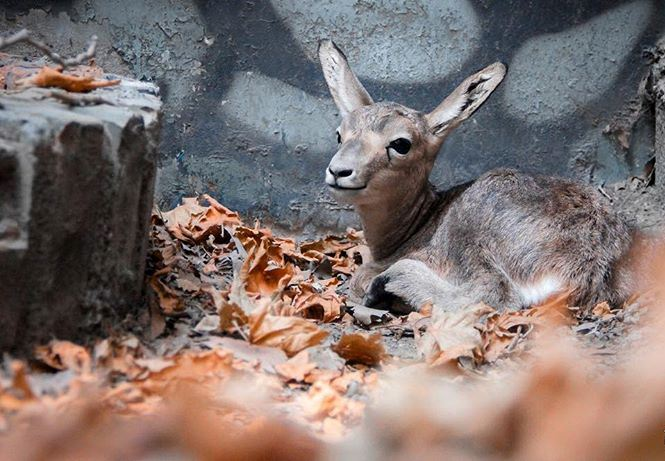
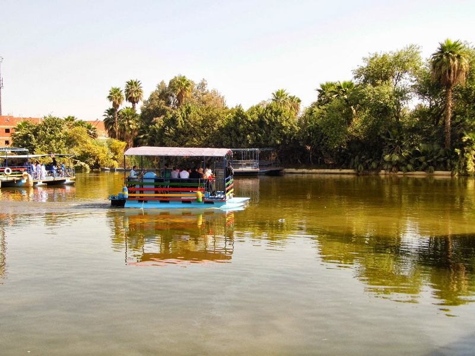
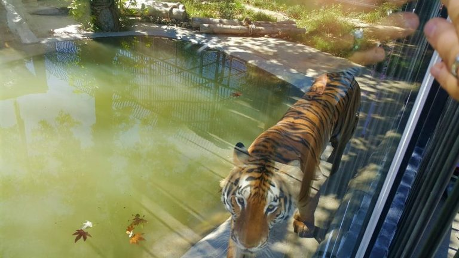
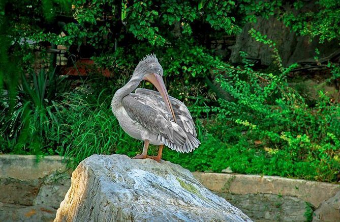
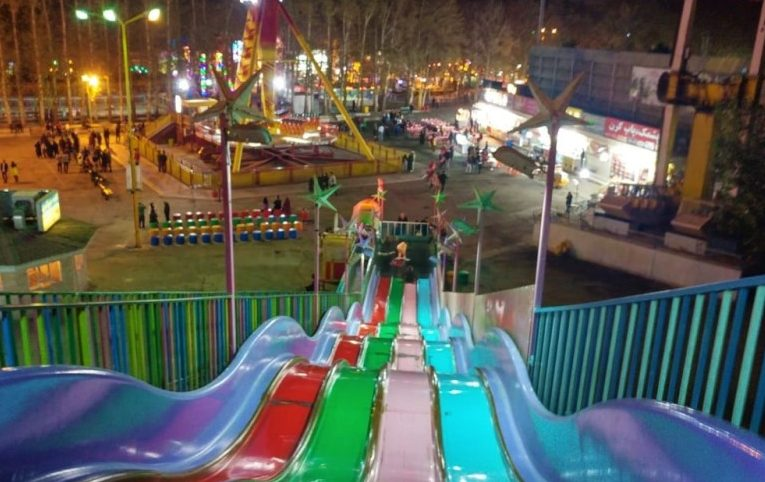
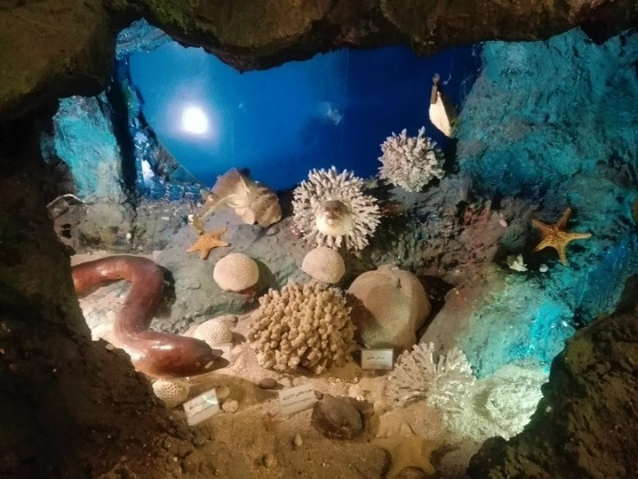

حديقة حيوان طهران
تقع حديقة حيوان طهران Tehran Zoological Garden على طريق طهران – كاراج السريع على بُعد نحو 4 كيلومترات من متنزه إرم الترفيهي الشهير
تغطي هذه الحديقة الضخمة مساحة قدرها 5 هكتارات، وهي حديقة حديثة نسبيًا حيث تم افتتاحها في عام 1992، وتضم بين اسوارها أكثر من 290 نوعًا من مُختلف فصائل الحيوانات

حديقة حيوانات طهران تُعد واحدة من أفضل اماكن سياحية في ايران رغم حداثتها النسبية، وتصلح تمامًا لأن تكون نُزهة مُتكاملة الأركان لك ولأطفالك
سوف ترى الكثير من الحيوانات المحلية المُميزة مثل النمور الفارسية النادرة، الغزلان والأحصنة العربية، فضلا عن الشمبانزي والأسود والنمور وغيرها من الحيوانات
انشطة تقوم بها في حديقة حيوان طهران
الحديقة تحتوي على مساحات واسعة تمتلئ بالأشجار الخضراء المعمرة، يمكنكم الجلوس بظلالها والتمتع بالهواء الطلق المنعش ستشعرون بالهدوء والاسترخاء خاصة أمام برك الماء داخلها

القيام بجولة داخل الحديقة والتعرف على الحيوانات ومعرفة مواطنها الأصلية ومعلومات عامة عنها ومشاهدتها عن قرب في الأقفاص مثل النمور والقرود والغزلان

خلال جولتكم داخل الحديقة ستستمتعون مع أطفالكم بزيارة أقسام الحيوانات الأليفة كالجمال، والطيور الجميلة الملونة مثل الببغاوات وغيرها سيحبون أطفالكم مداعبتها واطعامها

للأطفال إلى جانب جولتهم الشيقة داخل الحديقة يوجد أماكن مخصصة للعب وملاهي آمنة ومناسبة لأعمارهم سيقضون أوقات ممتعة من المرح والمتعة عليها

يتوافر في الحديقة العديد من المقاهي والمتاجر التي تقدم أجمل الأطباق الإيرانية التقليدية يمكنكم تجربتها والتمتع بمذاقها أو تناول الحلوى مع فنجان من القهوة أو الشاي والتمتع بأجمل مشاهد للحديقة أمامك
يمكنكم الاستمتاع بزيارة أحواض الأسماك الملونة والتي تم جمعها من أماكن مختلفة من العالم ستجدون هذه المعلومات وغيرها من خلال المرشد أو اللوحات التعريفية على الأحواض سيحب اطفالكم مشهدتها

لمحبي التصوير الفوتوغرافي والهواة ننصحكم باقتناء كاميرا جيدة فالحديقة ستغريكم بالتقاط الصور الفوتوغرافية الجميلة لأندر الحيوانات وأجملها سحبون الاحتفاظ بها ومشاركتها أصدقائكم وأحبتكم بعد عودتكم من السياحة في طهران
: ساعات العمل
طوال أيام الأسبوع من 9 صباحًا وحتى 7 مساءً